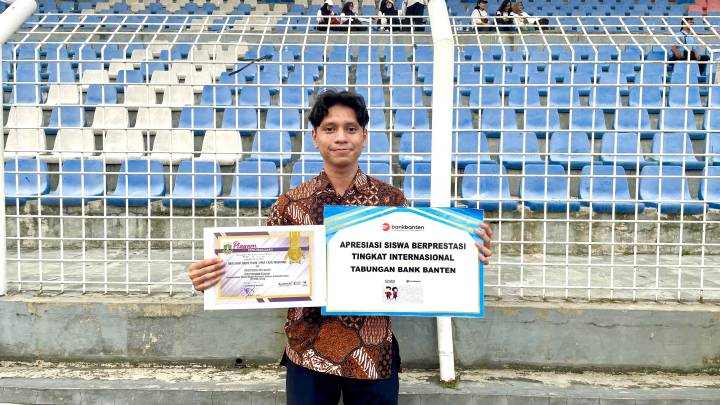

BERITA |
Juara di Panggung Internasional, Siswa SMKN 1 Kota Tangerang Diganjar Penghargaan Gubernur BantenDipublikasikan: Minggu, 10 Mei 2026 17:00 WIB
 Salah satu siswa berprestasi dari Sekolah Menengah Kejuruan Negeri (SMKN) 1 Kota Tangerang, Rash Asyari Amyris Thalib. (Sumber : Diskominfo Kota Tangerang) (ALWAN ARDIANSYAH) Salah satu siswa berprestasi dari Sekolah Menengah Kejuruan Negeri (SMKN) 1 Kota Tangerang, Rash Asyari Amyris Thalib baru saja menerima penghargaan dari Gubernur Banten Andra Soni secara langsung. Gubernur Banten memberikan penghargaan sebagai bentuk apresiasi atas prestasi yang diraih Raisy di panggung internasional. Sebelumnya, Raisy berhasil meraih medali emas di ajang lomba IT Network System Administration (ITNSA) World Skill ASEAN 2025 di Filipina. "Saya pribadi sangat bahagia mendapatkan penghargaan dari Bapak Gubernur Banten ini. Penghargaan ini pastinya menjadi kebanggaan tersendiri serta hasil yang diharapkan setelah bertahun-tahun berlatih menekuni bidang ini sampai ikut kompetisi dari tingkat daerah naik ke nasional sampai bisa di panggung internasional," ujar Rash, Minggu (10/5/26). Tidak sampai di situ, Rash juga mencatatkan prestasi membanggakan serupa di ajang World Skill Asia 2025 di Taiwan. Prestasi ini membuatnya dinobatkan sebagai salah satu talenta muda terbaik di bidang perancangan jaringan komputer yang dimiliki Indonesia. "Saya sekarang juga masih terus berlatih sebagai persiapan mengikuti kompetisi kelas dunia pada tahun ini. Kalau tahun kemarin di tingkat ASEAN dan Asia, September nanti ikut lagi untuk kompetisi kelas dunianya," tambah siswa berprestasi berusia 19 tahun tersebut. Selain itu, Rash berharap penghargaan yang diraihnya dapat menjadi motivasi untuk terus mengembangkan dan melatih diri agar dapat meraih prestasi di panggung dunia. ← Kembali ke Beranda. |